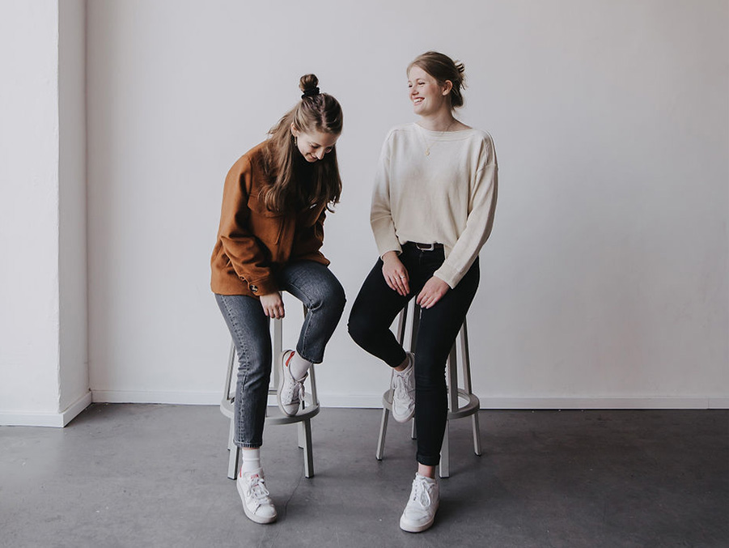
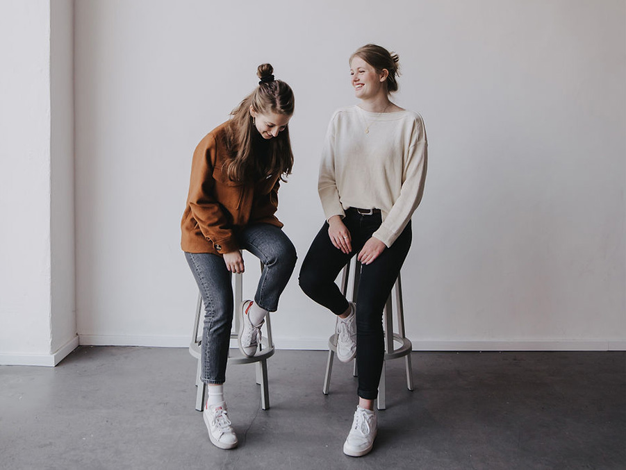

Studio Ajot ist ein Designstudio mit den Standorten Hamburg und Berlin. Nach dem gemeinsamen Master-Abschluss in Typografie und Buchgestaltung an der Muthesius Kunsthochschule in Kiel zog es Anastasia nach Berlin, um durch den Großstadtdschungel zu streifen und Johanna blieb des Windes und des hohen Himmels wegen im Norden.
Wir begleiten gerne Projekte aus den Bereichen Nachhaltigkeit, Diversität und Gleichberechtigung und verfolgen diese Werte von der Gestaltung über die Produktion bis zum fertigen Produkt.
Mit Kreativität und Feingefühl erarbeiten wir visuelle Konzepte und individuell zugeschnittene Lösungen für Markenidentitäten für kleine und große Unternehmen sowie Publikationen im Druckbereich wie Bücher, Kataloge, Broschüren, Poster, Internetseiten und alles, was es dazwischen noch so gibt. Wir lieben das Alte und das Neue, das Offensichtliche und das Verborgene. Wir verbinden Ungesehenes mit Gesehenem und sind erst dann fertig, wenn beide Seiten uneingeschränkt mit dem Ergebnis zufrieden und glücklich sind.
In enger Zusammenarbeit mit unseren KundInnen entwickeln wir maßgeschneiderte Lösungen mit einer konzeptionellen, emotional-intuitiven und individuellen Gestaltung, die auf unterschiedlichen Ebenen kommuniziert.
Und falls du noch immer rätselt, was Ajot heißt, scheue nicht zu fragen.
Wir freuen uns darauf, dich und dein Projekt kennen zu lernen!
REFERENZEN (Auswahl)
Lena Johanna Reisner
(Kuratorin)
Christian An
(Künstler)
Johann Sommer
(Künstler)
Mascha Livanskaia (Künstlerin)
Muthesius
Kunsthochschule, Kiel
Frauenberatung
Elmshorn
Haymon
Verlag
Pablo Martínez-Calleja (Fotograf)
Studio Pandan
Universität
Hamburg
Myrna Stuckert Coaching and Consulting
Markenbecker
Introvision e.V. Hamburg
Bauer Media Group
Brandchance GmbH
DayOff GmbH
getNextIT
Technische Universität Hamburg
VERÖFFENTLICHUNGEN/AUSSTELLUNGEN (Auswahl)
2021 Slanted Magazine #38
2021 Einblick Ausblick – Jahreskatalog, Ausstellung
2020 form 287
2020 PAGE, 07.20
2020 NDR Kultur – Radiobeitrag
2019 Miss Read Berlin
2019 Buchmesse Leipzig
2018 Art in Book Form, Sendpoints Publishing
Stimmen
»… Johanna und Anastasia haben gute Fragen gestellt, extrem gut zugehört und meine Gedanken sowie mein Feedback aufgegriffen und umgesetzt.
Sich in diesem Prozess gehört zu fühlen, ist meines Erachtens wichtig dafür, um sich später mit dem Ergebnis identifizieren zu können. …«
Sabine Wojcieszak, getNextIT
> Weiterlesen
»Die Zusammenarbeit mit Studio Ajot war ein Traum. Ein sehr professionelles Team, welches mit uns
gemeinsam und Schritt für Schritt ein neues Unternehmensdesign entworfen hat. Sehr zu empfehlen!«
Corin Freyer, DayOff
»Ich habe mit Johanna und Anastasia eine hervorragende Erfahrung gemacht.
Wir führten mehrere Gespräche über meine Ausstellung, die Hintergründe und was das Buch verkörpern sollte – als Objekt und inhaltlich.
Daraus ergab sich eine gründliche Arbeit und ein Buch, das ein einmaliges Kunstwerk ist.«
Pablo
Martínez-Calleja (Fotograf)